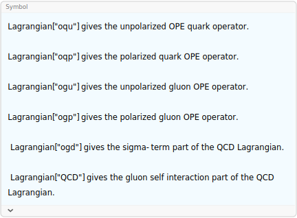
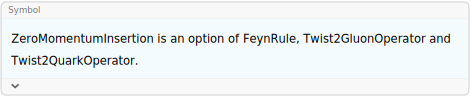

FeynRule[lag, {fields}] derives the Feynman rule
corresponding to the field configuration fields of the
Lagrangian lag.
FeynRule does not calculate propagator Feynman
rules.
The option ZeroMomentumInsertion can be used for twist-2
and higher twist operators.
FeynRule is not very versatile and was primarily
developed for QCD calculations. It is often more useful when dealing
with bosonic fields than with fermions. If you need a more powerful and
universal solution for deriving Feynman rules, have a look at the
standalone Mathematica Package FeynRules (not related to FeynCalc).
?Lagrangian
\phi ^4 Feynman rule
- \[Lambda]/4! QuantumField[\[Phi]]^4
FeynRule[%, {QuantumField[\[Phi]][p1], QuantumField[\[Phi]][p2],
QuantumField[\[Phi]][p3], QuantumField[\[Phi]][p4]}]-\frac{\lambda \phi ^4}{24}
-i \lambda
Quark-gluon vertex Feynman rule
I QuantumField[AntiQuarkField] . GA[\[Mu]] . CovariantD[\[Mu]] . QuantumField[QuarkField]
FeynRule[%, {QuantumField[GaugeField, {\[Mu]}, {a}][p1],
QuantumField[QuarkField][p2], QuantumField[AntiQuarkField][p3]}]i \bar{\psi }.\bar{\gamma }^{\mu }.D_{\mu }.\psi
i T^a g_s \bar{\gamma }^{\mu }
4-gluon vertex Feynman rule
-(1/4) FieldStrength[\[Alpha], \[Beta], i] . FieldStrength[\[Alpha], \[Beta], i]
FeynRule[%, {QuantumField[GaugeField, {\[Mu]}, {a}][p1], QuantumField[GaugeField, {\[Nu]}, {b}][p2],
QuantumField[GaugeField, {\[Rho]}, {c}][p3], QuantumField[GaugeField, {\[Sigma]}, {d}][p4]}]
GluonVertex[{p, \[Mu], a}, {q, \[Nu], b}, {r, \[Rho], c}, {s, \[Sigma], d}, Dimension -> 4, Explicit -> True]
FCCanonicalizeDummyIndices[% - %%] // Factor-\frac{1}{4} F_{\alpha \beta }^i.F_{\alpha \beta }^i
i g_s^2 f^{ad\text{FCGV}(\text{si49})} f^{bc\text{FCGV}(\text{si49})} \left(\bar{g}^{\mu \rho } \bar{g}^{\nu \sigma }-\bar{g}^{\mu \nu } \bar{g}^{\rho \sigma }\right)+i g_s^2 f^{ac\text{FCGV}(\text{si49})} f^{bd\text{FCGV}(\text{si49})} \left(\bar{g}^{\mu \sigma } \bar{g}^{\nu \rho }-\bar{g}^{\mu \nu } \bar{g}^{\rho \sigma }\right)+i g_s^2 f^{ab\text{FCGV}(\text{si49})} f^{cd\text{FCGV}(\text{si49})} \left(\bar{g}^{\mu \sigma } \bar{g}^{\nu \rho }-\bar{g}^{\mu \rho } \bar{g}^{\nu \sigma }\right)
-i g_s^2 \left(f^{ad\text{FCGV}(\text{u56})} f^{bc\text{FCGV}(\text{u56})} \left(\bar{g}^{\mu \nu } \bar{g}^{\rho \sigma }-\bar{g}^{\mu \rho } \bar{g}^{\nu \sigma }\right)+f^{ac\text{FCGV}(\text{u56})} f^{bd\text{FCGV}(\text{u56})} \left(\bar{g}^{\mu \nu } \bar{g}^{\rho \sigma }-\bar{g}^{\mu \sigma } \bar{g}^{\nu \rho }\right)+f^{ab\text{FCGV}(\text{u56})} f^{cd\text{FCGV}(\text{u56})} \left(\bar{g}^{\mu \rho } \bar{g}^{\nu \sigma }-\bar{g}^{\mu \sigma } \bar{g}^{\nu \rho }\right)\right)
0
3-gluon vertex Feynman rule
-(1/4) FieldStrength[\[Alpha], \[Beta], i] . FieldStrength[\[Alpha], \[Beta], i]
FeynRule[%, {QuantumField[GaugeField, {\[Mu]}, {a}][p], QuantumField[GaugeField, {\[Nu]}, {b}][q],
QuantumField[GaugeField, {\[Rho]}, {c}][r]}]
GluonVertex[{p, \[Mu], a}, {q, \[Nu], b}, {r, \[Rho], c}, Dimension -> 4, Explicit -> True]
ExpandScalarProduct[% - %%] // Factor-\frac{1}{4} F_{\alpha \beta }^i.F_{\alpha \beta }^i
g_s f^{abc} \left(\bar{g}^{\mu \nu } \left(\overline{p}^{\rho }-\overline{q}^{\rho }\right)-\bar{g}^{\mu \rho } \left(\overline{p}^{\nu }-\overline{r}^{\nu }\right)+\bar{g}^{\nu \rho } \left(\overline{q}^{\mu }-\overline{r}^{\mu }\right)\right)
g_s f^{abc} \left(\bar{g}^{\mu \nu } \left(\overline{p}-\overline{q}\right)^{\rho }+\bar{g}^{\mu \rho } \left(\overline{r}-\overline{p}\right)^{\nu }+\bar{g}^{\nu \rho } \left(\overline{q}-\overline{r}\right)^{\mu }\right)
0
Higgs EFT interaction vertex
heftInt = -(1/4) CH FieldStrength[mu, nu, a] . FieldStrength[mu, nu, a] . QuantumField[H]-\frac{1}{4} \;\text{CH} F_{\text{mu}\;\text{nu}}^a.F_{\text{mu}\;\text{nu}}^a.H
Hgg vertex Feynman rules
FeynRule[heftInt, {QuantumField[GaugeField, {i}, {a}][p1], QuantumField[GaugeField,
{j}, {b}][p2], QuantumField[H][p3]}]-i \;\text{CH} \delta ^{ab} \left(\overline{\text{p2}}^i \overline{\text{p1}}^j-\bar{g}^{ij} \left(\overline{\text{p1}}\cdot \overline{\text{p2}}\right)\right)
Hggg vertex Feynman rules
FeynRule[heftInt, {QuantumField[GaugeField, {i}, {a}][p1], QuantumField[GaugeField,
{j}, {b}][p2], QuantumField[GaugeField, {k}, {c}][p3], QuantumField[H][p4]}] // Simplify\text{CH} g_s f^{abc} \left(\bar{g}^{ij} \left(\overline{\text{p1}}^k-\overline{\text{p2}}^k\right)-\bar{g}^{ik} \left(\overline{\text{p1}}^j-\overline{\text{p3}}^j\right)+\bar{g}^{jk} \left(\overline{\text{p2}}^i-\overline{\text{p3}}^i\right)\right)
Hgggg vertex Feynman rules
FeynRule[heftInt, {QuantumField[GaugeField, {i}, {a}][p1], QuantumField[GaugeField, {j},
{b}][p2], QuantumField[GaugeField, {k}, {c}][p3],
QuantumField[GaugeField, {l}, {d}][p4], QuantumField[H][p5]}] //
FCCanonicalizeDummyIndices[#, SUNIndexNames -> {e}] & // Collect2[#, SUNF,
FCFactorOut -> I CH SMP["g_s"]^2] &i \;\text{CH} g_s^2 \left(f^{ade} f^{bce} \left(\bar{g}^{ik} \bar{g}^{jl}-\bar{g}^{ij} \bar{g}^{kl}\right)+f^{ace} f^{bde} \left(\bar{g}^{il} \bar{g}^{jk}-\bar{g}^{ij} \bar{g}^{kl}\right)+f^{abe} f^{cde} \left(\bar{g}^{il} \bar{g}^{jk}-\bar{g}^{ik} \bar{g}^{jl}\right)\right)
Some OPE-related examples:
2-quark Feynman rules (unpolarized).
Lagrangian["oqu"]
FeynRule[%, {QuantumField[QuarkField][p], QuantumField[AntiQuarkField][q]},
ZeroMomentumInsertion -> False] // Factori^m \bar{\psi }.\left(\bar{\gamma }\cdot \Delta \right).D_{\Delta }{}^{m-1}.\psi
-i i^m \left(\bar{\gamma }\cdot \Delta \right).\left(\vec{\partial }_{\Delta }\right){}^{m-1}
?ZeroMomentumInsertion
ExpandPartialD[Lagrangian["oqu"] /. OPEm -> 3]i g_s^2 T^{\text{c152}}.T^{\text{c153}}.\left(\bar{\gamma }\cdot \Delta \right).\bar{\psi }.A_{\Delta }^{\text{c152}}.A_{\Delta }^{\text{c153}}.\psi -g_s T^{\text{c152}}.\left(\bar{\gamma }\cdot \Delta \right).\bar{\psi }.A_{\Delta }^{\text{c152}}.\left(\partial _{\Delta }\psi \right)-g_s T^{\text{c153}}.\left(\bar{\gamma }\cdot \Delta \right).\bar{\psi }.A_{\Delta }^{\text{c153}}.\left(\partial _{\Delta }\psi \right)-g_s T^{\text{c153}}.\left(\bar{\gamma }\cdot \Delta \right).\bar{\psi }.\left(\partial _{\Delta }A_{\Delta }^{\text{c153}}\right).\psi -i \left(\bar{\gamma }\cdot \Delta \right).\bar{\psi }.\left(\partial _{\Delta }\partial _{\Delta }\psi \right)
Lagrangian["oqu"]
FeynRule[% /. OPEm -> 3, {QuantumField[QuarkField][p], QuantumField[AntiQuarkField][q],
QuantumField[GaugeField, {\[Mu]}, {a}][r]}, ZeroMomentumInsertion -> True]
FCReplaceMomenta[%, {r -> -p - q}] // ExpandScalarProduct // Expandi^m \bar{\psi }.\left(\bar{\gamma }\cdot \Delta \right).D_{\Delta }{}^{m-1}.\psi
T^a \Delta ^{\mu } g_s \left(-\left(\bar{\gamma }\cdot \Delta \right)\right) \left(2 \left(\Delta \cdot \overline{q}\right)+\Delta \cdot \overline{r}\right)
T^a \Delta ^{\mu } g_s \bar{\gamma }\cdot \Delta \left(\Delta \cdot \overline{p}\right)-T^a \Delta ^{\mu } g_s \bar{\gamma }\cdot \Delta \left(\Delta \cdot \overline{q}\right)
Lagrangian["oqu"]
FeynRule[% /. OPEm -> 4, {QuantumField[QuarkField][p], QuantumField[AntiQuarkField][q],
QuantumField[GaugeField, {\[Mu]}, {a}][r]}, ZeroMomentumInsertion -> True]
FCReplaceMomenta[%, {r -> -p - q}] // ExpandScalarProduct // Expandi^m \bar{\psi }.\left(\bar{\gamma }\cdot \Delta \right).D_{\Delta }{}^{m-1}.\psi
T^a \Delta ^{\mu } g_s \bar{\gamma }\cdot \Delta \left(3 (\Delta \cdot \overline{q})^2+(\Delta \cdot \overline{r})^2+3 \left(\Delta \cdot \overline{q}\right) \left(\Delta \cdot \overline{r}\right)\right)
T^a \Delta ^{\mu } g_s \bar{\gamma }\cdot \Delta (\Delta \cdot \overline{p})^2+T^a \Delta ^{\mu } g_s \bar{\gamma }\cdot \Delta (\Delta \cdot \overline{q})^2-T^a \Delta ^{\mu } g_s \bar{\gamma }\cdot \Delta \left(\Delta \cdot \overline{p}\right) \left(\Delta \cdot \overline{q}\right)
2-gluon Feynman rules (unpolarized).
Lagrangian["ogu"]
FeynRule[%, {QuantumField[GaugeField, {\[Mu]}, {a}][p], QuantumField[GaugeField, {\[Nu]},
{b}][q]}, ZeroMomentumInsertion -> False] // Factor\frac{1}{2} i^{m-1} F_{\text{FCGV}(\alpha )\Delta }^{\text{FCGV}(\text{a})}.\left(D_{\Delta }^{\text{FCGV}(\text{a})\text{FCGV}(\text{b})}\right){}^{m-2}.F_{\text{FCGV}(\alpha )\Delta }^{\text{FCGV}(\text{b})}
-i^m \delta ^{ab} \left(\vec{\partial }_{\Delta }\right){}^{m-2} \left(-\bar{g}^{\mu \nu } \left(\Delta \cdot \overline{p}\right) \left(\Delta \cdot \overline{q}\right)+\Delta ^{\nu } \overline{q}^{\mu } \left(\Delta \cdot \overline{p}\right)+\Delta ^{\mu } \overline{p}^{\nu } \left(\Delta \cdot \overline{q}\right)-\Delta ^{\mu } \Delta ^{\nu } \left(\overline{p}\cdot \overline{q}\right)\right)
2-gluon Feynman rules (polarized).
Lagrangian["ogp"]
FeynRule[%, {QuantumField[GaugeField, {\[Mu]}, {a}][p], QuantumField[GaugeField, {\[Nu]},
{b}][q]}, ZeroMomentumInsertion -> False] // Factor
Factor2[Calc[% /. p -> -q, Assumptions -> Automatic]]\frac{1}{2} i^m \bar{\epsilon }^{\text{FCGV}(\alpha )\text{FCGV}(\beta )\text{FCGV}(\gamma )\Delta }.F_{\text{FCGV}(\beta )\text{FCGV}(\gamma )}^{\text{FCGV}(\text{a})}.\left(D_{\Delta }^{\text{FCGV}(\text{a})\text{FCGV}(\text{b})}\right){}^{m-2}.F_{\text{FCGV}(\alpha )\Delta }^{\text{FCGV}(\text{b})}
i^{m+1} \delta ^{ab} \left(\vec{\partial }_{\Delta }\right){}^{m-2} \left(\Delta ^{\mu } \bar{\epsilon }^{\nu \Delta \overline{p}\overline{q}}-\Delta ^{\nu } \bar{\epsilon }^{\mu \Delta \overline{p}\overline{q}}-\left(\Delta \cdot \overline{p}\right) \bar{\epsilon }^{\mu \nu \Delta \overline{q}}+\left(\Delta \cdot \overline{q}\right) \bar{\epsilon }^{\mu \nu \Delta \overline{p}}\right)
0
Compare with the Feynman rule tabulated in Twist2GluonOperator.
Twist2GluonOperator[q, {\[Mu], a}, {\[Nu], b}, Polarization -> 1, Explicit -> True]i \left(1-(-1)^m\right) \delta ^{ab} (\Delta \cdot q)^{m-1} \overset{\text{}}{\epsilon }^{\mu \nu \Delta q}
quark-quark -gluon-gluon Feynman rule (unpolarized).
Lagrangian["oqu"]
frule = FeynRule[%, {QuantumField[QuarkField][p], QuantumField[AntiQuarkField][q],
QuantumField[GaugeField, {\[Mu]}, {a}][r], QuantumField[GaugeField, {\[Nu]}, {b}][s]},
ZeroMomentumInsertion -> True, InitialFunction -> Identity];i^m \bar{\psi }.\left(\bar{\gamma }\cdot \Delta \right).D_{\Delta }{}^{m-1}.\psi
\text{\$Aborted}
LeafCount[frule]1
Twist2QuarkOperator[{p}, {q}, {r, \[Mu], a}, {s, \[Nu], b}, Polarization -> 0]-(-1)^m \Delta ^{\mu } \Delta ^{\nu } g_s^2 \left(\bar{\gamma }\cdot \Delta \right).\left(T^a.T^b \left(\sum _{i=0}^{-3+m} \;\text{}\;\text{} (i+1)(\Delta \cdot q)^j (-(\Delta \cdot p))^{-i+m-3} (\Delta \cdot q+\Delta \cdot r)^{i-j}\right)+T^b.T^a \left(\sum _{i=0}^{-3+m} \;\text{}\;\text{} (i+1)(\Delta \cdot q)^j (-(\Delta \cdot p))^{-i+m-3} (\Delta \cdot q+\Delta \cdot s)^{i-j}\right)\right)
(*Twist2QuarkOperator[{p},{q},{r,\[Mu],a},{s,\[Nu],b},Polarization->0]
Calc[frule-%%/.OPEm->5/.s->-p-q-r/.D->4]*)